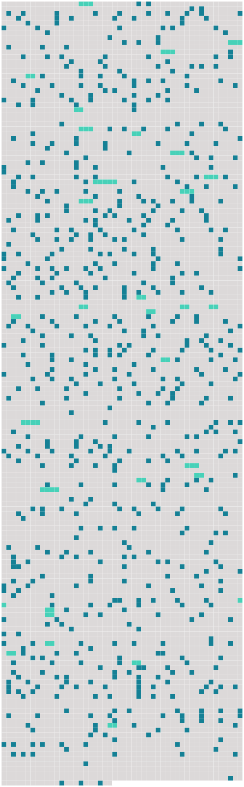

Longueur nb maillons : 721 mentions |
|
Ce fut au moment où la situation de la famille devenait le plus difficile, que [le petit Christophe] commença à comprendre ce qui se passait autour de [lui] [Il] n’ était plus seul enfant. [4 phrases]
Louisa, forcée de sortir, les confiait à [Christophe] , [qui] avait maintenant six ans. Il en coûtait à [Christophe] : car [il] devait renoncer pour ce devoir à [ses] bonnes après-midi dans les champs. Mais [il] était fier qu’ on [le] traitât en homme, et [il] s’ acquittait de [sa] tâche gravement. [Il] amusait de [son] mieux les petits, en leur montrant [ses] jeux ; et [il] s’ appliquait à leur parler, comme [il] avait entendu [sa] mère causer avec le bébé. Ou bien [il] les portait dans [ses] bras, l’ un après l’ autre, comme [il] avait vu faire ; [il] fléchissait sous le poids, serrant les dents, pressant de toute [sa] force le petit être contre [sa] poitrine, pour qu’ il ne tombât pas. Les petits voulaient toujours être portés, ils n’ en étaient jamais las ; et quand [Christophe] ne pouvait plus, c’ étaient des pleurs sans fin. Ils [lui] donnaient bien du mal, et [il] était souvent fort embarrassé d’ eux. [1 phrases] [Christophe] ne savait que faire. Ils abusaient de [lui] [Il] avait envie parfois de les gifler ; mais [il] pensait : « Ils sont petits, ils ne savent pas » ; et [il] se laissait pincer, taper, tourmenter, avec magnanimité. Ernst hurlait pour rien ; il trépignait, il se roulait de colère : c’ était un enfant nerveux, et Louisa avait recommandé à [Christophe] de ne pas contrarier ses caprices.
Quant à Rodolphe, il était d’ une malice de singe ; il profitait toujours de ce que [Christophe] avait Ernst sur les bras, pour faire derrière [son] dos toutes les sottises possibles ; il cassait les jouets, renversait l’ eau, salissait sa robe, et faisait tomber les plats, en fouillant dans le placard.
Si bien que lorsque Louisa rentrait, au lieu de complimenter [Christophe] , elle [lui] disait, sans [le] gronder, mais d’ un air chagrin, en voyant les dégâts :
[Christophe] était mortifié, et [il] avait le cœur gros. [2 phrases] [Le petit Christophe] n’ avait encore aucune idée des difficultés de la vie ; [il] ne connaissait d’ autres limites à [sa] volonté que celle de [ses] parents, [qui] n’ était pas bien gênante, puisqu’ on [le] laissait pousser à peu près au hasard ; [il] n’ aspirait qu’ à devenir grand, pour pouvoir faire tout ce qu’ [il] voulait. [Il] n’ imaginait pas les contraintes où l’ on se heurte à chaque pas ; et surtout [il] n’ eût jamais pensé que [ses] parents ne fussent pas entièrement maîtres d’ eux -mêmes.
Le jour où [il] entrevit pour la première fois qu’ il y avait parmi les hommes des gens qui commandent et des gens qui sont commandés, et que les siens et [lui] n’ étaient pas des premiers, tout [son] être se cabra : ce fut la première crise de [sa] vie. Ce jour -là, [sa] mère [lui] avait mis [ses] habits les plus propres, de vieux habits donnés, dont l’ ingénieuse patience de Louisa avait su tirer parti. [Il] alla la rejoindre, comme elle le [lui] avait dit, dans la maison où elle travaillait. [Il] était intimidé, à l’ idée d’ entrer seul. Un valet flânait sous le porche ; il arrêta [l’ enfant] et [lui] demanda d’ un ton protecteur ce qu’ [il] venait faire.
[Christophe] balbutia en rougissant qu’ [il] venait voir « madame Krafft », – ainsi qu’ on le [lui] avait recommandé de dire. [1 phrases] Qu’ est -ce que [tu] lui veux, à madame Krafft?? [1 phrases] – C’ est [ta] mère?? [Monte] là.
[Tu] trouveras Louisa à la cuisine, au fond du corridor. [Il] alla, de plus en plus rouge ; [il] avait honte d’ entendre appeler [sa] mère familièrement : Louisa.
[Il] était humilié ; [il] eût voulu se sauver près de [son] cher fleuve, à l’ abri des buissons, où [il] se contait des histoires. Dans la cuisine, [il] tomba au milieu d’ autres domestiques, qui [l’] accueillirent par des exclamations bruyantes. Au fond, près des fourneaux, [sa] mère [lui] souriait d’ un air tendre et un peu gêné. [Il] courut à elle et se [jeta] dans ses jambes. [1 phrases] Elle commença par ajouter à [son] trouble, en voulant qu’ [il] levât le menton, pour qu’ on vît [sa] figure, et qu’ [il] allât tendre la main à chacune des personnes qui étaient là, en leur disant bonjour. [Il] n’ y consentit pas ; [il] se tourna contre le mur et se [cacha] la tête dans [son] bras. Mais peu à peu [il] s’ enhardit, et [il] risqua hors de [sa] cachette un petit œil brillant et rieur, qui disparaissait de nouveau, toutes les fois qu’ on [le] regardait. [Il] observa les gens, à la dérobée. [Sa] mère avait un air affairé et important, qu’ il ne [lui] connaissait pas ; elle allait d’ une casserole à l’ autre, goûtant, donnant son avis, expliquant d’ un ton sûr des recettes, que la cuisinière ordinaire écoutait avec respect.
Le cœur de [l’ enfant] se gonflait d’ orgueil, en voyant combien on appréciait [sa] mère, et quel rôle elle jouait dans cette belle pièce, ornée d’ objets magnifiques d’ or et de cuivre qui brillaient. [6 phrases] Quand elle levait un peu la main, la manche retombait, et le bras était nu jusqu’ au-dessus du coude : ce que [Christophe] trouva laid et malhonnête. [2 phrases] [Christophe] en fut saisi. [Il] se dissimula dans [son] coin, pour ne pas être aperçu ; mais cela ne servit à rien. La dame demanda qui était [ce petit garçon] ; Louisa vint [le] prendre et [le] présenter ; elle [lui] tenait les mains pour [l’] empêcher de se cacher la figure ; et, bien qu’ [il] eût envie de se débattre et de fuir, [Christophe] sentit d’ instinct qu’ il fallait cette fois ne faire aucune résistance. La dame regarda la mine effarée de [l’ enfant] ; et son premier mouvement, maternel, fut de [lui] sourire gentiment. Mais elle reprit aussitôt son air protecteur, et [lui] posa sur sa conduite, sur sa piété, des questions auxquelles [il] ne répondit rien. [1 phrases] Elle tirait le veston, pour effacer les plis ; [Christophe] avait envie de crier, tant [il] était serré.
[Il] ne comprenait pas pourquoi [sa] mère remerciait. La dame [le] prit par la main, et dit qu’ elle voulait [le] conduire vers ses enfants.
[Christophe] jeta un regard désespéré sur [sa] mère ; mais elle souriait à la maîtresse d’ un air si empressé qu’ [il] vit qu’ il n’ y avait rien à espérer, et [il] suivit son guide, comme un mouton qu’ on mène à la boucherie. Ils arrivèrent dans un jardin, où deux enfants à l’ air maussade, un garçon et une fille, à peu près du même âge que [Christophe] , semblaient se bouder l’ un l’ autre. L’ arrivée de [Christophe] fit diversion. Ils se rapprochèrent pour examiner [le nouveau venu] [Christophe] , abandonné par la dame, restait planté dans une allée, sans oser lever les yeux. Les deux autres, immobiles à quelques pas, [le] regardaient des pieds à la tête, se poussaient du coude, et ricanaient. [1 phrases] Ils [lui] demandèrent qui [il] était, d’ où [il] venait, et ce que faisait [son] père.
[Christophe] ne répondit rien, pétrifié : [il] était intimidé jusqu’ aux larmes, surtout par la petite fille, qui avait des nattes blondes, une jupe courte, et les jambes nues. [1 phrases]
Comme [Christophe] commençait à se rassurer un peu, le petit bourgeois tomba en arrêt devant [lui] , et touchant [son] habit, il dit : [Christophe] ne comprenait pas.
Indigné de cette prétention que [son] habit fût à un autre, [il] secoua la tête avec énergie, pour nier. [3 phrases] Puis, continuant son inspection, il examina les pieds de [Christophe] , et [lui] demanda avec quoi étaient faits les bouts de [ses] souliers rapiécés. [Christophe] devint cramoisi. La fillette fit la moue et souffla à son frère – [Christophe] l’ entendit, – que [c’] était [un petit pauvre] [Christophe] en retrouva la parole. [Il] crut combattre victorieusement cette opinion injurieuse, en bredouillant d’ une voix étranglée qu’ [il] était [le fils de Melchior Krafft] , et que [sa] mère était Louisa, la cuisinière. Il [lui] semblait que ce titre était aussi beau que quelque autre que ce fût ; et [il] avait bien raison. [2 phrases] Ils [lui] demandèrent ce qu’ [il] ferait plus tard, s’ [il] serait aussi cuisinier ou cocher. [Christophe] retomba dans [son] mutisme.
[Il] sentait comme une glace qui [lui] pénétrait le cœur. Enhardis par [son] silence, les deux petits riches, qui avaient pris brusquement pour [le petit pauvre] une de ces antipathies d’ enfant, cruelles et sans raison, cherchèrent quelque moyen amusant de [le] tourmenter. [1 phrases] Elle remarqua que [Christophe] avait peine à courir, à cause de [ses] vêtements étroits ; et elle eut l’ idée raffinée de [lui] faire accomplir des sauts d’ obstacle. On fit une barrière avec de petits bancs, et on mit [Christophe] en demeure de la franchir. [Le malheureux garçon] n’ osa dire ce qui [l’] empêchait de sauter ; [il] rassembla [ses] forces, se [lança] , et s’ [allongea] par terre. Autour de [lui] , c’ étaient des éclats de rire. [1 phrases] Les larmes aux yeux, [il] fit un effort désespéré, et, cette fois, [réussit] à sauter. Cela ne satisfit point [ses] bourreaux, qui décidèrent que la barrière n’ était pas assez haute ; et ils y ajoutèrent d’ autres constructions, jusqu’ à ce qu’ elle devînt un casse-cou. [Christophe] essaya de se révolter ; [il] déclara qu’ [il] ne sauterait pas. Alors la petite fille [l’] appela lâche et dit qu’ [il] avait peur. [Christophe] ne put le supporter ; et, certain de tomber, [il] sauta, et [tomba] [Ses] pieds se prirent dans l’ obstacle : tout s’ écroula avec [lui] [Il] s’ écorcha les mains, [faillit] se casser la tête ; et, pour comble de malheur, [son] vêtement éclata aux genoux, et ailleurs. [Il] était malade de honte ; [il] entendait les deux enfants danser de joie autour de [lui] ; [il] souffrait d’ une façon atroce. [Il] sentait qu’ ils [le] méprisaient, qu’ ils [le] haïssaient …… [2 phrases] [Il] aurait voulu mourir!! – Pas de douleur plus cruelle que celle de l’ enfant qui découvre pour la première fois la méchanceté des autres : [il] se croit persécuté par le monde entier, et [il] n’ a rien qui [le] soutienne : il n’ y a plus rien, il n’ y a plus rien!! … [Christophe] essaya de se relever ; le petit bourgeois [le] poussa et [le] fit retomber ; la fillette [lui] donna des coups de pied. [Il] essaya de nouveau ; ils se jetèrent sur [lui] tous deux, s’ asseyant sur [son] dos, [lui] appuyant la figure contre terre. Alors une rage [le] prit : c’ était trop de malheurs!! [Ses] mains qui [le] brûlaient, [son] bel habit déchiré – une catastrophe pour [lui] !! [1 phrases]
[Il] s’ arc-bouta sur [ses] genoux et [ses] mains, se [secoua] comme un chien, [fit] rouler [ses] persécuteurs ; et, comme ils revenaient à la charge, [il] fonça la tête baissée sur eux, [gifla] la petite fille, et [jeta] d’ un coup de poing le garçon au milieu d’ une plate-bande. [4 phrases] [Christophe] la voyait venir, et [il] ne cherchait pas à fuir ; [il] était terrifié de ce qu’ [il] avait fait : c’ était une chose inouïe, un crime ; mais [il] ne regrettait rien. [Il] attendait. [Il] était perdu. [1 phrases]
[Il] était réduit au désespoir. La dame fondit sur [lui] [Il] se sentit frapper. [Il] entendit qu’ elle [lui] parlait d’ une voix furieuse, avec un flot de paroles ; mais [il] ne distinguait rien. [Ses] deux petits ennemis étaient revenus pour assister à [sa] honte, et piaillaient à tue-tête. [1 phrases] Pour achever de [l’] accabler, Louisa, qu’ on avait appelée, parut ; et, au lieu de [le] défendre, elle commença par [le] claquer, elle aussi, avant de rien savoir, et voulut qu’ [il] demandât pardon. [Il] s’ y refusa avec rage. Elle [le] secoua plus fort et [le] traîna par la main vers la dame et les enfants, pour qu’ [il] se mît à genoux. Mais [il] trépigna, [hurla] , et [mordit] la main de [sa] mère.
[Il] se sauva enfin au milieu des domestiques qui riaient. [Il] s’ en allait, le cœur gonflé, la figure brûlante de colère et des tapes qu’ [il] avait reçues. [Il] tâchait de ne pas penser, et [il] hâtait le pas, parce qu’ [il] ne voulait pas pleurer dans la rue.
[Il] aurait voulu être rentré, pour se soulager de [ses] larmes ; [il] avait la gorge serrée, le sang à la tête : [il] éclatait. Enfin, [il] arriva ; [il] monta en courant le vieil escalier noir, jusqu’ à [sa] niche habituelle dans l’ embrasure d’ une fenêtre, au-dessus du fleuve ; [il] s’ y jeta hors d’ haleine ; et ce fut un déluge de pleurs. [Il] ne savait pas au juste pourquoi [il] pleurait ; mais il fallait qu’ [il] pleurât ; et quand le premier flot fut à peu près passé, [il] pleura encore, parce qu’ [il] voulait pleurer, avec une sorte de rage, pour se faire souffrir, comme s’ [il] punissait ainsi les autres, en même temps que [lui] Puis, [il] pensa que [son] père allait rentrer, que [sa] mère raconterait tout et que [ses] malheurs n’ étaient pas près de leur fin.
[Il] résolut de fuir, n’ importe où, pour ne plus revenir jamais.
Juste au moment où [il] descendait, [il] se heurta à [son] père qui rentrait. – Que fais [-tu] là, [gamin] ?? où vas [-tu] ?? [1 phrases]
[Il] ne répondait pas. – [Tu] as fait quelque sottise.
Qu’ est -ce que [tu] as fait?
[Christophe] se taisait obstinément. – Qu’ est -ce que [tu] as fait?? [1 phrases]
Veux [-tu] répondre? [L’ enfant] se mit à pleurer, et Melchior à crier, de plus en plus fort l’ un et l’ autre, jusqu’ à ce qu’ on entendît le pas précipité de Louisa, qui montait l’ escalier. [3 phrases] [L’ enfant] hurlait. [1 phrases] Tout en rossant [son fils] , Melchior disait que [le petit] avait raison, que voilà à quoi on s’ exposait en allant servir chez des gens, qui se croient tout permis, parce qu’ ils ont de l’ argent. Et tout en frappant [l’ enfant] , Louisa criait à son mari qu’ il était un brutal, qu’ elle ne lui permettait pas de toucher [le petit] , et qu’ il [l’] avait blessé. En effet, [Christophe] saignait un peu du nez ; mais [il] n’ y pensait guère, et [il] ne sut aucun gré à [sa] mère de le [lui] tamponner rudement avec un linge mouillé, puisqu’ elle continuait à [le] gronder.
À la fin, on [le] poussa dans un recoin obscur, où on [l’] enferma sans souper. [Il] les entendait crier l’ un contre l’ autre ; et [il] ne savait pas lequel [il] détestait le plus. Il [lui] semblait que c’ était [sa] mère ; car [il] n’ eût jamais attendu d’ [elle] une pareille méchanceté. Tous [ses] malheurs de la journée [l’] accablaient à la fois : tout ce qu’ [il] avait souffert, l’ injustice des enfants, l’ injustice de la dame, l’ injustice de [ses] parents, et – ce qu’ [il] sentait aussi, comme une blessure vive, sans s’ en rendre compte, – l’ abaissement de [ses] parents, dont [il] était si fier, devant ces autres gens, méchants et méprisables. Cette lâcheté, dont [il] prenait une vague conscience, pour la première fois, [lui] paraissait ignoble. Tout en [lui] était ébranlé : [son] admiration pour les siens, le respect religieux qu’ ils [lui] inspiraient, [sa] confiance dans la vie, le besoin naïf qu’ [il] avait d’ aimer les autres et d’ en être aimé, [sa] foi morale, aveugle, mais absolue. [1 phrases] [Il] était écrasé par la force brutale, sans nul moyen de se défendre, de réchapper jamais. [Il] suffoqua. [Il] crut mourir. [Il] se raidit de tout [son] être, dans une révolte désespérée.
[Il] tapa des poings, des pieds, de la tête, contre le mur, [hurla] , [fut] pris de convulsions, et, se meurtrissant aux meubles, [tomba] par terre. [Ses] parents, accourus, [le] prirent dans leurs bras. [1 phrases] [Sa] mère [le] déshabilla, [le] porta dans [son] lit, s’ assit à [son] chevet et resta auprès de [lui] , jusqu’ à ce qu’ [il] fût plus calme. Mais [il] ne désarmait point, [il] ne pardonnait rien, et [il] fit semblant de dormir, pour ne pas [l’] embrasser. [Sa] mère [lui] semblait mauvaise et lâche.
[Il] ne se doutait pas de tout le mal qu’ elle avait pour vivre et [le] faire vivre, et de ce qu’ elle avait souffert de prendre parti contre [lui] Après qu’ [il] eut épuisé jusqu’ à la dernière goutte l’ incroyable provision de larmes qui tient dans les yeux d’ [un enfant] , [il] se sentit un peu soulagé. [Il] était las ; mais [ses] nerfs étaient trop tendus pour qu’ [il] pût dormir. Les images de tantôt recommencèrent à flotter dans [sa] demi-torpeur. C’ était surtout la petite fille qu’ [il] revoyait, avec ses yeux brillants, son petit nez levé d’ une façon dédaigneuse, ses cheveux sur ses épaules, ses jambes nues et sa parole enfantine et poseuse. [Il] tressaillit, en croyant réentendre sa voix. [Il] se rappelait combien [il] avait été stupide avec elle ; et [il] se sentait contre elle une haine farouche ; [il] ne lui pardonnait pas de [l’] avoir humilié, [il] était dévoré du désir de l’ humilier à [son] tour, de la faire pleurer. [Il] en chercha les moyens, et n’ en [trouva] aucun. Il n’ y avait nulle apparence qu’ elle se souciât jamais de [lui] Mais, pour se soulager, [il] supposa que tout fût ainsi qu’ [il] le souhaitait. [Il] établit donc qu’ [il] était devenu très puissant et glorieux ; et [il] décida en même temps qu’ elle était amoureuse de [lui]
Alors [il] commença de se raconter une de ces absurdes histoires, qu’ [il] finissait par croire plus réelles que la réalité. Elle se mourait d’ amour ; mais [il] la dédaignait. Quand [il] passait devant sa maison, elle [le] regardait passer, cachée derrière les rideaux ; et [il] se savait regardé ; mais [il] feignait de n’ y prendre pas garde, et [il] parlait gaiement. [Il] quittait même le pays et [voyageait] , au loin, afin d’ augmenter sa peine. [Il] faisait de grandes choses. – Ici, [il] introduisait dans [son] récit certains fragments choisis des récits héroïques de grand-père. [1 phrases] Sa mère, l’ orgueilleuse dame, venait [le] supplier : « Ma pauvre fille se meurt. Je [vous] en prie, [venez] !! » [Il] venait. [2 phrases] Elle [lui] tendait les bras. Elle ne pouvait parler ; mais elle [lui] prenait les mains et les baisait en pleurant. Alors [il] la regardait avec une bonté et une douceur admirables. [Il] lui disait de guérir, et [consentait] à ce qu’ elle [l’] aimât.
Arrivé à ce moment du récit, comme [il] se plaisait à en prolonger l’ agrément, en répétant plusieurs fois les paroles et les attitudes, le sommeil vint [le] prendre ; et [il] s’ endormit consolé. Mais quand [il] rouvrit les yeux, le jour était venu ; et ce jour ne brillait plus avec l’ insouciance du matin précédent : quelque chose était changé dans le monde.
[Christophe] connaissait l’ injustice. [3 phrases] Nul ne s’ en apercevait mieux que [Christophe] [4 phrases] Lorsque venait [le tour de Christophe] , souvent il n’ en restait que trois sur l’ assiette, et [sa] mère n’ était pas servie. [Il] le savait d’ avance, [il] les avait comptées, avant qu’ elles arrivent à [lui]
Alors [il] rassemblait [son] courage, et d’ un air dégagé : [2 phrases]
– Non, [je] t’ en prie, une seule.
– Est -ce que [tu] n’ as pas faim?
– Non, [je] n’ ai pas grand’faim. [1 phrases] [Sa] mère [le] surveillait.
Quand [il] avait fini : [1 phrases]
– Mais [tu] es malade, alors?
– [Je] ne suis pas malade, mais [j’] ai assez mangé. Il arrivait que [son] père [lui] reprochât de faire le difficile, et qu’ il s’ adjugeât la dernière pomme de terre.
Mais [Christophe] se méfiait maintenant ; et [il] la réservait sur [son] assiette pour Ernst, le petit frère, toujours vorace, qui la guettait du coin de l’ œil depuis le commencement du dîner, et qui finissait par [lui] demander :
[Donne] -la -moi, dis, [Christophe] [1 phrases] comme [Christophe] détestait [son] père, comme il lui en voulait de ne pas penser à eux, de ne même pas se douter qu’ il leur mangeait leur part!! [Il] avait si faim qu’ [il] le haïssait et qu’ [il] aurait voulu le lui dire ; mais [il] pensait, dans [son] orgueil, qu’ [il] n’ en avait pas le droit, tant qu’ [il] ne gagnerait pas [sa] vie. Ce pain que [son] père [lui] prenait, [son] père l’ avait gagné. [Lui] n’ était bon à rien ; [il] était une charge pour tous ; [il] n’ avait pas le droit de parler. Plus tard, [il] parlerait – s’ [il] arrivait à plus tard. [1 phrases] [il] mourrait de faim, avant!!
… [Son] robuste estomac était à la torture ; parfois [il] en tremblait, la tête [lui] faisait mal ; [il] avait un trou dans la poitrine, un trou qui tournait et qui s’ élargissait comme une vrille qu’ on enfonce. Mais [il] ne se plaignait pas ; [il] se sentait observé par [sa] mère, et [il] prenait un air indifférent. Louisa, le cœur serré, comprenait vaguement que [son petit garçon] se privait de manger, pour que les autres eussent davantage ; elle repoussait cette pensée ; mais elle y revenait toujours. Elle n’ osait pas l’ éclaircir, demander à [Christophe] si c’ était vrai ; car, si ç’avait été vrai, qu’ aurait -elle pu faire?? [2 phrases] Elle ne se doutait pas, il est vrai, avec sa frêle santé et son peu de besoins, que [l’ enfant] dût souffrir davantage. Elle ne [lui] disait rien ; mais, une ou deux fois, quand les autres étaient sortis, les enfants dans la rue, Melchior à ses affaires, elle priait [son aîné] de rester, pour [lui] rendre quelque petit service. [Christophe] lui tenait [sa] pelote, tandis qu’ elle la dévidait. Brusquement, elle jetait tout, et [l’] attirait passionnément à elle ; elle [le] mettait sur ses genoux, quoiqu’ [il] fût déjà bien lourd ; elle [le] serrait.
[Il] lui passait avec violence [ses] bras autour du cou, et ils pleuraient tous deux, en s’ embrassant comme des désespérés. – [Mon pauvre petit garçon] !! [2 phrases] [Christophe] fut assez longtemps avant de s’ apercevoir que [son] père buvait. [4 phrases] [Christophe] voyait bien que [sa] mère avait l’ air triste ; elle se retirait à l’ écart, et baissait le nez sur son ouvrage ; elle évitait de regarder l’ ivrogne ; et elle tâchait doucement de le faire taire, quand il disait des grossièretés qui la faisaient rougir. Mais [Christophe] ne comprenait pas ; et [il] avait un tel besoin de gaieté qu’ [il] se faisait presque une fête de ces retours bruyants du père. La maison était triste ; et ces folies étaient une détente pour [lui] [Il] riait de tout [son] cœur des gestes grotesques et des plaisanteries stupides de Melchior ; [il] chantait et [dansait] avec lui ; et [il] trouvait très mauvais que [sa] mère, d’ une voix fâchée, [lui] ordonnât de cesser. Comment cela eût [-il] été mal, puisque [son] père le faisait?? Bien que [sa] petite observation toujours en éveil, et qui n’ oubliait rien, [lui] eût fait remarquer dans la conduite de [son] père plusieurs choses qui n’ étaient pas conformes à [son] instinct enfantin et impérieux de justice, [il] continuait pourtant à l’ admirer. [4 phrases] [Christophe] oubliait donc tous [ses] griefs contre [son] père, et [il] s’ évertuait à trouver des raisons de l’ admirer : [il] admirait sa taille, ses bras robustes, sa voix, son rire, sa gaieté ; et il rayonnait d’ orgueil, quand il entendait admirer son talent de virtuose, ou quand Melchior racontait, en les amplifiant, les éloges qu’ il avait reçus.
[Il] croyait à ses vantardises ; et [il] regardait [son] père comme un génie, un des héros de grand-père. Un soir, vers sept heures, [il] était seul à la maison. [4 phrases] [Christophe] commença à rire, pensant qu’ il s’ agissait d’ une de ses farces habituelles ; et [il] vint vers lui. Mais dès qu’ [il] le vit de près, [il] n’ eut plus envie de rire. Melchior était assis, les bras pendants, et regardait devant [lui] , sans voir, avec des yeux qui clignotaient ; sa figure était cramoisie ; il avait la bouche ouverte ; il en sortait de temps en temps un gloussement stupide. [Christophe] fut saisi.
[Il] crut d’ abord que [son] père plaisantait ; mais voyant qu’ il ne bougeait pas, [il] fut pris de peur. [2 phrases]
criait [-il] [1 phrases]
[Christophe] lui saisit le bras avec désespoir, et le [secoua] de toutes [ses] forces :
[Je] t’ en supplie! Le corps de Melchior vacilla comme une chose molle, faillit tomber ; sa tête s’ inclina vers celle de [Christophe] ; il [le] regarda, en gargouillant des syllabes incohérentes et irritées. Quand les yeux de [Christophe] rencontrèrent ces yeux troubles, une terreur folle s’ empara de [lui] [Il] se sauva au fond de la chambre, se [jeta] à genoux devant le lit, et [enfouit] [sa] figure dans les draps. [2 phrases] [Christophe] se bouchait les oreilles, pour ne pas entendre, et [il] tremblait.
Ce qui se passait en [lui] était inexprimable : c’ était un bouleversement affreux, un effroi, une douleur, comme si quelqu’un était mort, quelqu’un de cher et de vénéré. Personne ne rentrait, ils restaient seuls tous deux ; la nuit tombait, et la peur de [Christophe] augmentait de minute en minute. [Il] ne pouvait s’ empêcher d’ écouter, et [son] sang se glaçait, en entendant cette voix qu’ [il] ne reconnaissait plus ; l’ horloge boiteuse marquait la mesure de ce jacassement insensé. [Il] n’ y tint plus, [il] voulut fuir. Mais pour sortir, il fallait passer devant [son] père ; et [Christophe] frémissait, à l’ idée de revoir ses yeux : il [lui] semblait qu’ il en mourrait. [Il] tâcha de se glisser sur les mains et sur les genoux jusqu’ à la porte de la chambre. [Il] ne respirait pas, [il] ne regardait pas, [il] s’ arrêtait au moindre mouvement de Melchior, dont [il] voyait les pieds sous la table. [1 phrases] [Christophe] parvint à la porte ; d’ une main maladroite, [il] appuya sur la poignée ; mais, dans [son] trouble, [il] la lâcha : elle se referma brusquement. [1 phrases]
[Christophe] épouvanté n’ eut pas la force de fuir, [il] resta collé au mur, regardant [son] père allongé à ses pieds ; et [il] criait au secours. [2 phrases] Il vit [Christophe] [qui] pleurait : il [l’] appela. [Christophe] voulait se sauver ; [il] ne pouvait bouger. Melchior [l’] appela de nouveau ; et comme [l’ enfant] ne venait pas, il jura de colère. [Christophe] s’ approcha, en tremblant de tous [ses] membres. Melchior [l’] attira vers lui, et [l’] assit sur ses genoux. Il commença par [lui] tirer les oreilles, en [lui] faisant, d’ une langue pâteuse et bredouillante, un sermon sur le respect que [l’ enfant] doit à [son] père. Puis, il changea brusquement d’ idée, et [le] fit sauter dans ses bras en débitant des inepties : il se tordait de rire. De là, sans transition, il passa à des idées tristes ; il s’ apitoya sur [le petit] et sur lui -même ; il [le] serrait, [le] couvrait de baisers et de larmes ; et finalement, il [le] berça, en entonnant le De Profundis. [Christophe] ne faisait aucun mouvement pour se dégager ; [il] était glacé d’ horreur. Étouffé contre la poitrine de [son] père, sentant sur sa figure l’ haleine chargée de vin et les hoquets de l’ ivrogne, mouillé par les baisers et les pleurs répugnants, [il] agonisait de dégoût et de peur. [Il] eût voulu crier, et nul cri ne pouvait sortir de [sa] bouche. [Il] resta dans cet état affreux, un siècle, à ce qu’ il [lui] parut, – jusqu’ à ce que la porte s’ ouvrît et que Louisa entrât, un panier de linge à la main.
Elle poussa un cri, laissa tomber le panier, se précipita vers [Christophe] , et avec une violence que nul ne lui aurait crue, elle [l’] arracha des bras de Melchior : [3 phrases] [Christophe] crut que [son] père allait la tuer. [2 phrases] Louisa lui avait tourné le dos avec mépris ; elle emportait [Christophe] dans la chambre voisine, elle [le] caressait, elle cherchait à [le] rassurer. [Le petit] continuait de trembler, et [il] ne répondait pas aux questions de [sa] mère ; puis [il] éclata en sanglots. Louisa [lui] baigna la figure avec de l’ eau ; elle [l’] embrassait, elle [lui] parlait tendrement, elle pleurait avec [lui] [1 phrases] Elle s’ agenouilla, [le] mit à genoux auprès d’ elle. [1 phrases] Louisa coucha [l’ enfant] [Il] voulut qu’ elle restât près de [son] lit, à [lui] tenir la main. Louisa passa une partie de la nuit, assise au chevet de [Christophe] [qui] avait la fièvre. [1 phrases] À quelque temps de là, à l’ école, où [Christophe] passait [son] temps à regarder les mouches au plafond et à donner des coups de poing à [ses] voisins, pour les faire tomber du banc, le maître qui [l’] avait pris en grippe, parce qu’ [il] remuait toujours, parce qu’ on [l’] entendait toujours rire, et parce qu’ [il] n’ apprenait jamais rien, [fit] une allusion inconvenante, un jour que [Christophe] s’ était [lui -même] laissé choir, à certain personnage bien connu dont [il] semblait vouloir suivre brillamment les traces. [1 phrases] [Christophe] se releva, rouge de honte, [saisit] [son] encrier, et le [lança] à toute volée à la tête du premier qu’ [il] vit rire.
Le maître tomba sur [lui] à coups de poing ; [il] fut fustigé, mis à genoux, et condamné à un pensum énorme. [Il] rentra chez [lui] , blême, rageant en silence ; et [il] déclara froidement qu’ [il] n’ irait plus à l’ école. On ne fit pas attention à [ses] paroles. Le lendemain matin, quand [sa] mère [lui] rappela qu’ il était l’ heure de partir, [il] répondit avec tranquillité qu’ [il] avait dit qu’ [il] n’ irait plus. [1 phrases] [Il] restait assis dans [son] coin, le front obstiné. Melchior [le] roua de coups : [il] hurla ; mais à toutes les sommations qu’ on [lui] faisait après chaque correction, [il] répondait rageusement : « Non!! » On [lui] demanda au moins de dire pourquoi ; [il] serra les dents et ne [voulut] rien dire. Melchior [l’] empoigna, [le] porta à l’ école et [le] remit au maître. Revenu à [son] banc, [il] commença par casser méthodiquement tout ce qui se trouvait à [sa] portée : [son] encrier, [sa] plume, [il] déchira [son] cahier et [son] livre, – le tout d’ une façon bien visible, en regardant le maître d’ un air provocant. On [l’] enferma au cabinet noir.
– Quelques instants après, le maître [le] trouva, [son] mouchoir noué autour du cou, tirant de toutes [ses] forces sur les deux coins : [il] tâchait de s’ étrangler.
Il fallut [le] renvoyer. [Christophe] était dur au mal. [Il] tenait de [son] père et de [son] grand-père leur robuste constitution. [2 phrases] [Christophe] n’ était pas loin de partager leur dédain pour [sa] mère : [il] ne comprenait pas qu’ on fût malade ; quand [il] tombait, ou se [frappait] , ou se [coupait] , ou se [brûlait] , [il] ne pleurait pas ; mais [il] était irrité contre l’ objet ennemi. Les brutalités de [son] père et de [ses] petits compagnons, les polissons des rues, avec qui [il] se battait, [le] trempèrent solidement. [Il] ne craignait pas les coups ; et [il] revint plus d’ une fois au logis, avec le nez saignant et des bosses au front. Un jour, il fallut [le] dégager, presque étouffé, d’ une de ces mêlées furieuses, où [il] avait roulé sous [son] adversaire, qui [lui] cognait avec férocité la tête sur le pavé.
[Il] trouvait cela naturel, étant prêt à faire aux autres ce qu’ on [lui] faisait à [lui -même] Cependant, [il] avait peur d’ une infinité de choses ; et, bien qu’ on n’ en sût rien, – car [il] était très orgueilleux, – rien ne [le] fit tant souffrir que ces terreurs continuelles, durant une partie de [son] enfance.
Pendant deux ou trois ans surtout, elles sévirent en [lui] , comme une maladie.
[Il] avait peur du mystérieux qui s’ abrite dans l’ ombre, des puissances mauvaises qui semblent guetter la vie, du grouillement de monstres, que tout cerveau d’ [enfant] porte en [lui] avec épouvante et mêle à tout ce qu’ [il] voit : derniers restes sans doute d’ une faune disparue, des hallucinations des premiers jours près du néant, du sommeil redoutable dans le ventre de la mère, de l’ éveil de la larve au fond de la matière. [Il] avait peur de la porte du grenier. [1 phrases] Quand [il] devait passer devant, [il] sentait [son] cœur battre ; [il] prenait [son] élan, et [sautait] sans regarder. Il [lui] semblait qu’ il y avait quelqu’un ou quelque chose derrière. Les jours où elle était fermée, [il] entendait distinctement par la chatière entr’ouverte remuer derrière la porte. Ce n’ était pas étonnant, car il y avait de gros rats ; mais [il] imaginait un être monstrueux, des os déchiquetés, des chairs comme des haillons, une tête de cheval, des yeux qui font mourir, des formes incohérentes ; [il] ne voulait pas y penser et y [pensait] malgré [lui]
[Il] s’ assurait d’ une main tremblante que le loquet était bien mis : ce qui ne [l’] empêchait pas de se retourner dix fois, en descendant les marches. [Il] avait peur de la nuit, au dehors. Il [lui] arrivait de s’ arrêter chez le grand-père, ou d’ y être envoyé le soir, pour quelque commission. [1 phrases] Entre cette maison et les premières fenêtres éclairées de la ville, il y avait deux ou trois cents pas, qui paraissaient bien le triple à [Christophe] [9 phrases] [Christophe] était toujours dans l’ attente angoissée de quelque excentricité sinistre de la nature. [Il] courait, et [son] cœur sautait dans [sa] poitrine. |
 |
Il est possible de télécharger la ressource sur la page Ortolang |
Si vous avez des questions ou vous voyez des erreurs, merci d'envoyer un mail à silvia.federzoni89@gmail.com |